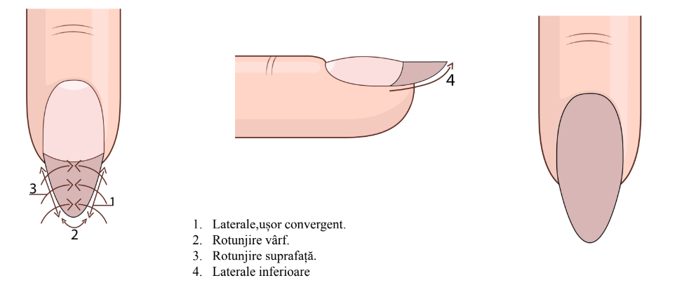
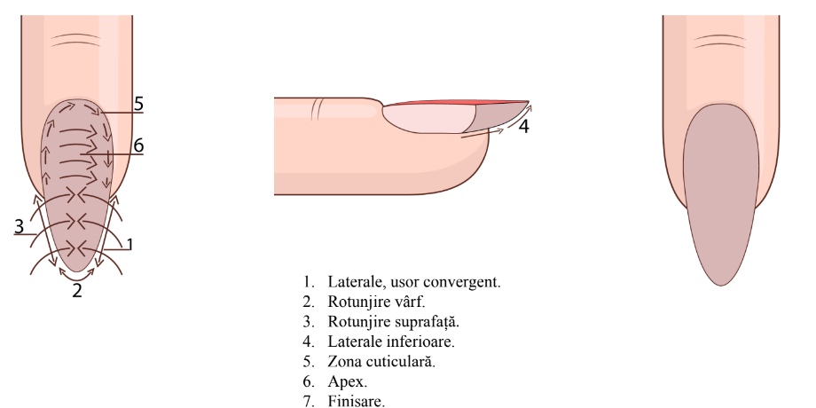
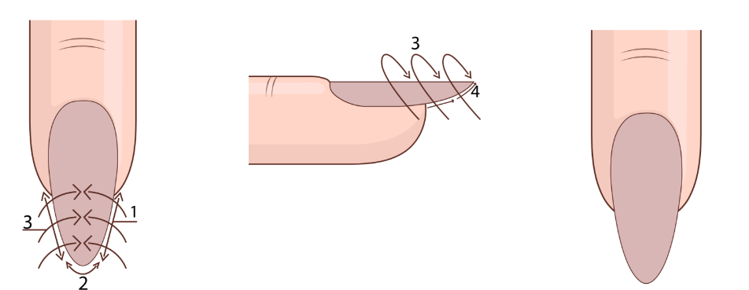
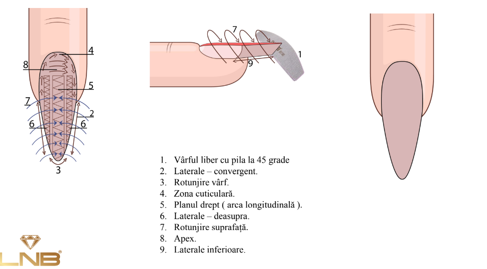
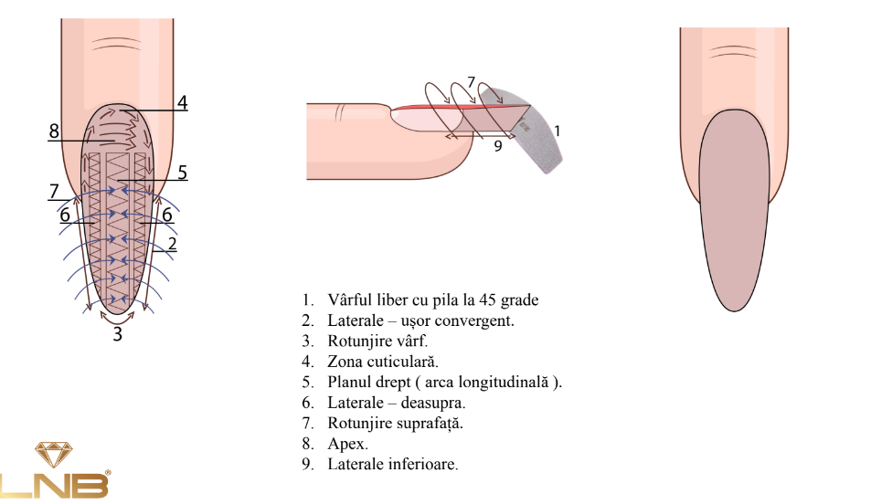
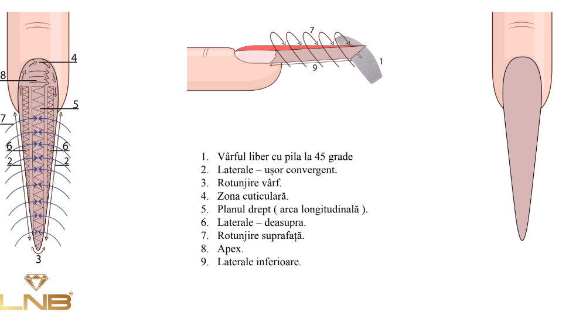

Forme unghii cu gel:
Balerina
Migdala
Patrat
Slim
Rotund
Balerina:
Migdala:
-
Clasica:
- Laterale, usor convergent
- Rotunjire varf
- Rotunjire suprafata
- Laterale inferioare

-
Clasica moderna:
- Laterale, usor convergent.
- Rotunjire vârf.
- Rotunjire suprafață.
- Laterale inferioare.
- Zona cuticulară.
- Apex
- Finisare

-
Slim:
- Laterale,ușor convergent.
- Rotunjire vârf.
- Rotunjire suprafață.
- Laterale inferioare

- Moderna de salon:

- Rusa

- Rusa moderna

Patrat:
- Natural
- Cu colturi rotunjite
- Arcuit
- Squoval
Unghiile sunt de 3 tipuri:
- Standarde
- Concave
- Convexe